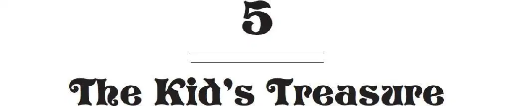
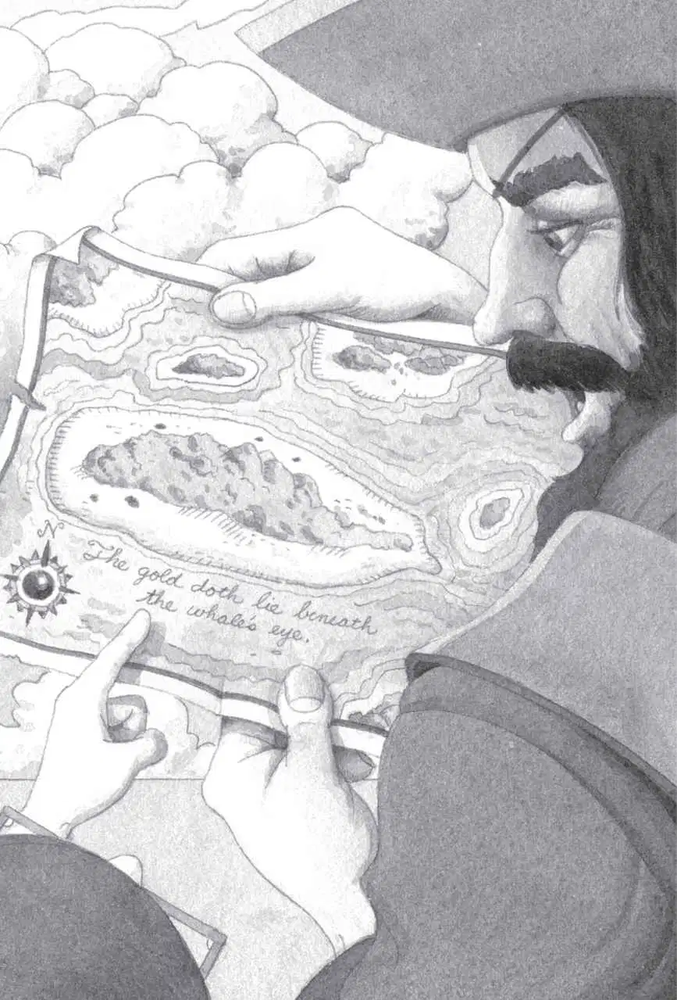

Jack and Annie watched in horror.
The gold-greedy pirates seemed to have lost their minds.
Jack nudged Annie. Together they started to back slowly away from the pirates. Toward the tree house.
“Halt!” Cap’n Bones shouted. He aimed his pistols at them. “Not another step, lubbers!”
Jack and Annie froze.
Cap’n Bones grinned his black-toothed grin. “Tell old Bones where the rest is,” he growled. “Or prepare to meet thy doom.”
“What—what rest?” said Annie.
“The rest of the treasure!” roared Cap’n Bones. “I know it’s on this island. I have a map!”
He reached into a belt pouch and pulled out a torn piece of paper. He waved it at Jack and Annie.
“Is that a treasure map?” asked Jack.
“Aye, it’s the map telling about Kidd’s treasure.”
“Which kid’s treasure? Not us kids,” said Annie. “We don’t know anything about a kid’s treasure.”
“Why don’t you read the map?” said Jack.
“You read it!” Cap’n Bones shoved the map in Jack’s face.
Jack stared at the strange marks on the paper.
“What does that mean?” asked Jack.
“What does what mean?” asked Cap’n Bones.
“Those words.” Jack pointed at the words at the bottom of the map.
“Well, it means…” Cap’n Bones’ good eye squinted at the writing. He frowned. He coughed. He rubbed his nose.
“Aw, leave him alone,” Pinky growled at Jack.
“You know he can’t read,” said Stinky.
“Shut up!” Cap’n Bones roared at his men.
“Jack and I can read,” Annie piped up.
“Shhh,” said Jack.
“Cap’n, make ’em read the map!” said Stinky.
Cap’n Bones gave Jack and Annie a dark look. “Read it,” he growled.
“Then will you let us go?” said Jack.

The pirate squinted his good eye. “Aye, lubber. When the treasure’s in me hands, I’ll let you go.”
“Okay,” said Jack. “I’ll read it to you.” He looked at the map. “It says, The gold doth lie beneath the whale’s eye.”
“Heh?” Cap’n Bones scowled. “What’s that supposed to mean, lubber?”
Jack shrugged.
“Hang it! Take ’em hack to the ship!” shouted Cap’n Bones. “They can rot there till they’re ready to tell us how to find Kidd’s treasure!”
Jack and Annie were tossed into the rowboat.
Waves splashed the sides. The sky ahead was dark with thunderclouds. A strong wind had started to blow.
“Row, dogs, row!” said Cap’n Bones.
Pinky and Stinky began rowing toward the big ship.
“Look!” Annie said to Jack. She pointed to the shore.
Polly the parrot was flying over the sand.
“She wants to help us,” whispered Annie.
Polly started to fly out over the waves. But the winds were too strong. She turned around and flew back to the island.